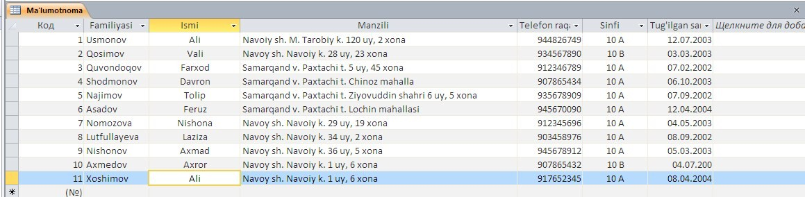

29-DARS. MS ACCESS 2010 DA MA’LUMOTLARNI BERILGAN SHABLON BO‘YICHA IZLASH VA QAYTA ISHLASH
MS Access 2010 da ma’lumotlarni berilgan shablon bo‘yicha izlash va qayta ishlash uchun Главная menyusidan Выделение bandidan yoki jadval ustiga sichqonchaning o‘ng tugmasini bosilib, Текстовые – фильтры – Ровнр… ketma – ketligi yordamida amalga oshirishi mumkin. Jadvaldagi ma’lumotlarni familiyasi, ismi, manzili kabi ma’lumotlari bo‘yicha izlashimiz mumkin. Izlab topilgan ma’lumotlarni bekor qilish uchun Главная menyusining Фильтр bo‘limi tanlanadi.
1-mashq. 10-sinf o‘quvchilarining (familiyasi, ismi, yashash manzili, telefon raqami, tug‘ilgan yili) ma’lumotlar omborini yaratish va ular ustida izlash va qayta ishlash.
Bajarish:
• MS Access 2010 da o‘quvchilar haqidagi ma’lumotlarni aytilgan parametrlari bo‘yicha shakllantiramiz:

Ushbu jadvaldagi ma’lumotlardan “Ali” ismli o‘quvchilar izlash uchun “Ali” ismli yozuvni belgilab, Главная menyusidan Выделение – Равно – Ali ketma-ketligi bajariladi. Natijada dastur jadvaldagi “Ali” ismli o‘quvchilar haqidagi ma’lumotlarni qidirib topib beradi. Agar bizga jadvaldan “Ali va Vali” ismli o‘quchilarni izlash so‘ralgan bo‘lsa, o‘quvchilar ismi yozilgan katakchaga chizqonchaning o‘ng tugmasi bosilib, Текстовый фильтры – Заканчивается на.. ketma-ketligi tanlanadi va Настраиваймый фильтр qatoriga “Ali or Vali” jumla kiritilib, OK tugmasi tanlanadi.
• Natijada quyidagi oynada Ali va Vali ismli o‘quvchilar haqidagi ma’lumotlar hosil bo‘ladi:
Tartiblangan ma’lumotlarni bekor qilish uchun Главная menyusining Фильтр burug‘i tanlanadi.
Shuningdek, MS Access 2010 da ma’lumotlarni so‘rovlar yordamida ham izlash imkoniyati mavjud. Mazkur jarayonni Создание menyusining Конструктор запрос bo‘limi orqali amalga oshirish mumkin. Конструктор запрос yordamida bitta jadvaldan bir nеchta har xil so‘rovlar (jadvallar)ni tashkil qilish mumkin. Har bir so‘rovlar asosiy jadvaldan ma’lumotlarning qandaydir bir qismini ajratib oladi.
So‘rovning ishlashi natijasida asosiy jadvaldan natijaviy jadval hosil bo‘ladi. Bu jadval umumiy ma’lumotdan so‘rovga ta’lluqli qismini o‘z ichiga oladi.
So‘rovning ishlashi jarayonida bеrilganlar tartiblanishi, filtrlanishi, qo‘shilishi, bo‘linishi, o‘zgarishi mumkin va shu bilan bir qatorda jadvallardagi ma’lumotlar o‘zgarmaydi. Bu so‘rovlarning asosiy xossalaridan biri hisoblanadi. So‘rovlarning yana bir xossalaridan biri bu ularning natijaviy hisob-kitob ishlarini bajarishidir.
MS Access 2010 da so‘rovlarning bir nеchta turlari mavjud:
• tanlov asosidagi so‘rov, namuna asosidagi so‘rov;
• paramеtrli so‘rov;
yuqorida ko‘rsatilgan so‘rovlardan keng tarqalgani – tanlov asosidagi so‘rov.
Bu so‘rovni qo‘llashdan maqsad so‘rov sharti bo‘yicha tasvirlanadigan natijaviy jadvalni hosil qilishdan iborat.
2-mashq. Yuqorida, keltirilgan 1-mashqdagi o‘quvchilar ma’lumotlari omboridan, biror o‘quvchining ismi bo‘yicha qidiring.
Bajarish:
• quyidagi ko‘rinishdagi o‘quvchilar haqidagi ma’lumotlar ombori hosil qilngan bo‘lsin:
• Создание menyusidan Конструктор запрос bo‘limi tanlanadi;
• Добавление таблицы oynasidan Добавить tugmasi tanlanadi va Закрыть tugmasi orqali oyna yopiladi:
• hosil bo‘lgan oynani quyidagi tartibda to‘ldiramiz:
• ushbu oynadan qaysi parametr bo‘yicha qidirish kerak bo‘lsa o‘sha ustunning Условие отбора qatori belgilanib, “[ ]” qavs ichiga biror bir jumla kiritiladi. Masalan, o‘quvchilar ismi bo‘yicha izlovchi so‘rov yaratish uchun “Ismi” ustuniga “[Qidirish]” jumlasi kiritiladi, menyudan Выполнить buyrug‘i tanlanadi. Natijada quyidagi oyna hosil bo‘ladi:

Bunda biz oynaga qidirmoqchi bo‘lgan o‘quvchining ismi kiritilib, OK tugmasini tanlaymiz. Natijada jadvaldagi “Ali” ismli o‘quvchilar to‘g‘risidagi ma’lumot hosil bo‘ladi:

1. Ma’lumotlar omborida berilgan shablon bo‘yicha izlash qanday amalga oshiriladi?
2. Saralangan ma’lumotlar qanday bekor qilinadi?
3. Jadvaldagi uchta familiyani bir vaqtda qidirib saralang.
4. O‘quvchilarning ma’lumotlar omborini yarating va bunda quyidagi ketma-ketlikdan foydalanig:
a) Familiyasi bo‘yicha qidiruvchi MO yarating;
b) Telefon raqami bo‘yicha qidiruvchi MO yarating;
c) Sinfi bo‘yicha qidiruvchi MO yarating;

1. 10-sinf darsliklarining ma’lumotlar omborini hosil qiling va ularning mualliflar orqali qidiruvchi dastur yarating.
2. 10-sinf darsliklarinining ma’lumotlari jadvalini yuklang va menyudagi Найти buyrug‘i orqali (Darslik nomi, yaratilgan yili, mualliflarini) qidiring.